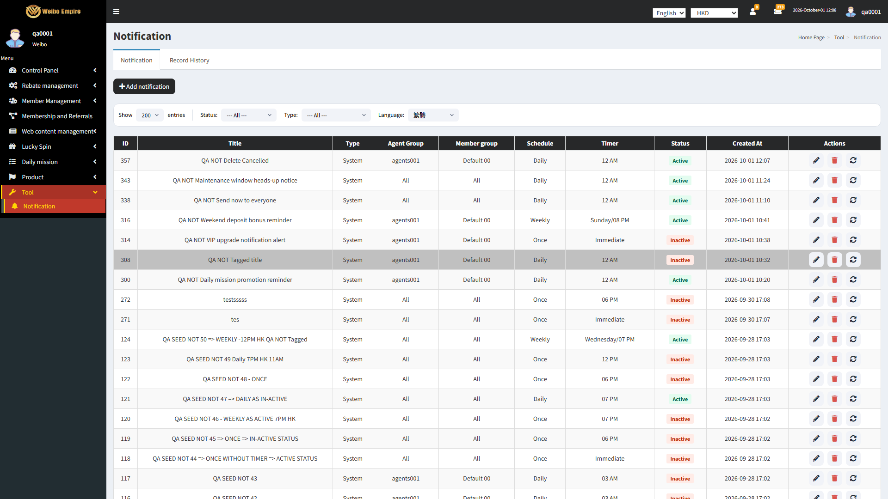

NOT-DEL-001
Details deleteAsksFirstcreates-data
Logged in to the Weibo merchant admin back-office as Super Admin/Admin with access to Tool > Notification. On the Notification tab.
Click the delete (trash) icon on a notification row. Any existing test notification. Used in this run
After Save = Successfully addedCreated "QA NOT Delete Me" = listedConfirmation = Prompt message Confirm deletion? Confirm CancelClicking the delete icon prompts for confirmation before removal
The application behaved as expected.124 events recorded, ended on https://admin-test.1083.city/tools/notification/
Pass 81.37s
Creates data. Side effects reach outside the browser — a real account, a real SMS, a filed deposit, a withdrawal hold or a staked balance — so it is kept out of unattended runs and must be run attended.
The case
Case id NOT-DEL-001
Method NotificationTest#deleteAsksFirst
Group 4. Delete notification (DeleteNotification)
Pre-condition Logged in to the Weibo merchant admin back-office as Super Admin/Admin with access to Tool > Notification. On the Notification tab.
Expected result Clicking the delete icon prompts for confirmation before removal
Tags creates-data
Outcome Pass in 81.37s
The result
Verdict Every assertion in the case held.
Verified Clicking the delete icon prompts for confirmation before removal
Duration 81.37 seconds
The steps below are the run's own record of how the case reached that verdict, and the Evidence column shows the page it finished on.
What the run did (124 recorded events)
0.00s STEP Case started: NOT-DEL-001: Clicking the delete icon prompts for confirmation before removal 0.00s STEP Opening Tool > Notification. 0.02s API GET api/account/inbox-notification-rule?page=1&paginate=200¤cy=HKD -> 200 0.05s API GET tools/notification -> 301 0.05s API GET http://admin-test.1083.city/tools/notification/ -> 301 0.06s API GET tools/notification/ -> 200 0.08s API GET https://static.cloudflareinsights.com/beacon.min.js/v31edd6df95cf4e85bb4c19e7a9bdbcba1788362987495 -> 200 0.16s API GET https://fonts.googleapis.com/css?family=Source+Sans+Pro:300,400,600,700,300italic,400italic,600italic -> 200 0.34s NAV Loaded tools/notification/ 0.41s API POST cdn-cgi/rum? -> 204 0.50s API GET api/account/user-profile -> 200 0.57s API POST cdn-cgi/rum? -> 204 0.57s API POST cdn-cgi/rum? -> 204 0.57s API POST cdn-cgi/rum? -> 204 0.57s API POST cdn-cgi/rum? -> 204 0.70s API GET api/app-info?currency=HKD -> 200 0.81s API GET api/account/allow-menu?currency=HKD -> 200 0.97s API GET api/lang?currency=HKD -> 200 1.04s API GET api/account/inbox-notification-rule?page=1&paginate=50¤cy=HKD -> 200 1.07s API GET api/account/member_group?no_paginate=true¤cy=HKD -> 200 1.07s API GET api/account/phone-countries?currency=HKD -> 200 1.11s API GET api/account/inbox-notification-record?whereRange[sent_at][from]=&whereRange[sent_at][to]=&page=1&paginate=50¤cy=HKD -> 200 1.37s API GET api/account/agent?no_paginate=true&status=1¤cy=HKD -> 200 1.83s STEP Setting the Status filter to --- All ---. 2.09s API GET api/account/inbox-notification-rule?page=1&paginate=50¤cy=HKD -> 200 3.09s STEP Showing 200 entries per page. 4.36s API GET api/account/inbox-notification-rule?page=1&paginate=200¤cy=HKD -> 200 5.82s API GET api/account/system_info?currency=HKD -> 200 10.91s API GET api/account/system_info?currency=HKD -> 200 12.51s STEP Creating the fixture notification "QA NOT Delete Me". 12.51s STEP Clicking + Add notification. 12.74s API POST cdn-cgi/rum? -> 204 12.74s API POST cdn-cgi/rum? -> 204 12.94s API GET api/lang?currency=HKD -> 200 13.16s STEP Filling Title, Content and Link on the 繁體 tab. 13.18s API GET api/account/member_group?no_paginate=true¤cy=HKD -> 200 13.50s API GET api/account/agent?no_paginate=true&status=1¤cy=HKD -> 200 14.81s STEP Ticking Override above contents to: All languages. 15.22s STEP Setting Type to System. 15.66s STEP Setting Schedule to Daily. 15.90s API GET api/account/system_info?currency=HKD -> 200 16.11s STEP Setting Timer to 12 AM. 16.56s STEP Setting Status to Active. 17.18s STEP Moving agents001 into the Agent Group's Selected column. 17.75s STEP Moving Default 00 into the Member Group's Selected column. 18.24s STEP Clicking Save Notification. 18.32s STEP The page asked: "Confirm to add?" - pressing Confirm. 19.32s API POST api/account/inbox-notification-rule?currency=HKD -> 200 19.49s API POST cdn-cgi/rum? -> 204 19.49s API POST cdn-cgi/rum? -> 204 19.50s API POST cdn-cgi/rum? -> 204 19.51s API POST cdn-cgi/rum? -> 204 19.52s STEP The page said: "Successfully added" - pressing OK. 19.60s API GET api/account/member_group?no_paginate=true¤cy=HKD -> 200 19.72s API GET api/lang?currency=HKD -> 200 19.77s API GET api/account/inbox-notification-rule?page=1&paginate=200¤cy=HKD -> 200 19.82s API GET api/account/inbox-notification-record?whereRange[sent_at][from]=&whereRange[sent_at][to]=&page=1&paginate=50¤cy=HKD -> 200 19.94s API GET api/account/inbox-notification-rule?page=1&paginate=200¤cy=HKD -> 200 20.20s API GET api/account/agent?no_paginate=true&status=1¤cy=HKD -> 200 20.85s API GET api/account/system_info?currency=HKD -> 200 21.09s DATA After Save = Successfully added 21.09s STEP Opening Tool > Notification. 21.11s API GET tools/notification -> 301 21.11s API GET http://admin-test.1083.city/tools/notification/ -> 301 21.11s API GET tools/notification/ -> 200 21.13s API GET https://static.cloudflareinsights.com/beacon.min.js/v31edd6df95cf4e85bb4c19e7a9bdbcba1788362987495 -> 200 21.22s API GET https://fonts.googleapis.com/css?family=Source+Sans+Pro:300,400,600,700,300italic,400italic,600italic -> 200 21.54s NAV Loaded tools/notification/ 21.60s API POST cdn-cgi/rum? -> 204 21.72s API GET api/account/user-profile -> 200 21.81s API POST cdn-cgi/rum? -> 204 21.81s API POST cdn-cgi/rum? -> 204 21.81s API POST cdn-cgi/rum? -> 204 21.81s API POST cdn-cgi/rum? -> 204 21.98s API GET api/app-info?currency=HKD -> 200 22.08s API GET api/account/allow-menu?currency=HKD -> 200 22.19s API GET api/lang?currency=HKD -> 200 22.22s API GET api/account/inbox-notification-rule?page=1&paginate=50¤cy=HKD -> 200 22.33s API GET api/account/member_group?no_paginate=true¤cy=HKD -> 200 22.38s API GET api/account/phone-countries?currency=HKD -> 200 22.39s API GET api/account/inbox-notification-record?whereRange[sent_at][from]=&whereRange[sent_at][to]=&page=1&paginate=50¤cy=HKD -> 200 22.59s API GET api/account/agent?no_paginate=true&status=1¤cy=HKD -> 200 23.12s STEP Setting the Status filter to --- All ---. 23.42s API GET api/account/inbox-notification-rule?page=1&paginate=50¤cy=HKD -> 200 24.42s STEP Showing 200 entries per page. 25.72s API GET api/account/inbox-notification-rule?page=1&paginate=200¤cy=HKD -> 200 27.06s API GET api/account/system_info?currency=HKD -> 200 32.11s API GET api/account/system_info?currency=HKD -> 200 37.11s API GET api/account/system_info?currency=HKD -> 200 40.51s DATA Created "QA NOT Delete Me" = listed 40.51s STEP Clicking Delete (trash) on "QA NOT Delete Me". 41.42s DATA Confirmation = Prompt message Confirm deletion? Confirm Cancel 41.42s STEP Cancelling the deletion. 42.08s API GET api/account/system_info?currency=HKD -> 200 42.28s STEP Opening Tool > Notification. 42.30s API GET tools/notification -> 301 42.31s API GET http://admin-test.1083.city/tools/notification/ -> 301 42.32s API GET tools/notification/ -> 200 42.34s API GET https://static.cloudflareinsights.com/beacon.min.js/v31edd6df95cf4e85bb4c19e7a9bdbcba1788362987495 -> 200 42.42s API GET https://fonts.googleapis.com/css?family=Source+Sans+Pro:300,400,600,700,300italic,400italic,600italic -> 200 42.76s NAV Loaded tools/notification/ 42.83s API POST cdn-cgi/rum? -> 204 43.01s API GET api/account/user-profile -> 200 43.07s API POST cdn-cgi/rum? -> 204 43.07s API POST cdn-cgi/rum? -> 204 43.07s API POST cdn-cgi/rum? -> 204 43.07s API POST cdn-cgi/rum? -> 204 43.30s API GET api/app-info?currency=HKD -> 200 43.36s API GET api/account/allow-menu?currency=HKD -> 200 43.49s API GET api/lang?currency=HKD -> 200 43.50s API GET api/account/member_group?no_paginate=true¤cy=HKD -> 200 43.70s API GET api/account/inbox-notification-record?whereRange[sent_at][from]=&whereRange[sent_at][to]=&page=1&paginate=50¤cy=HKD -> 200 43.75s API GET api/account/inbox-notification-rule?page=1&paginate=50¤cy=HKD -> 200 43.75s API GET api/account/phone-countries?currency=HKD -> 200 44.03s API GET api/account/agent?no_paginate=true&status=1¤cy=HKD -> 200 44.77s STEP Setting the Status filter to --- All ---. 45.80s API GET api/account/inbox-notification-rule?page=1&paginate=50¤cy=HKD -> 200 46.81s STEP Showing 200 entries per page. 48.45s API GET api/account/inbox-notification-rule?page=1&paginate=200¤cy=HKD -> 200 48.48s API GET api/account/system_info?currency=HKD -> 200 53.70s API GET api/account/system_info?currency=HKD -> 200 58.39s API GET api/account/system_info?currency=HKD -> 200 59.89s STEP Case ended on https://admin-test.1083.city/tools/notification/ 60.26s EVIDENCE Captured the closing screenshot.
NOT-DEL-002
Details confirmRemovescreates-data
Logged in to the Weibo merchant admin back-office as Super Admin/Admin with access to Tool > Notification. On the Notification tab.
Click Delete on a notification. Confirm the deletion. Any existing test notification. Used in this run
After Save = Successfully addedCreated "QA NOT Delete Confirmed" = listedConfirming deletion removes the notification from the list
The application behaved as expected.121 events recorded, ended on https://admin-test.1083.city/tools/notification/
Pass 54.07s
Creates data. Side effects reach outside the browser — a real account, a real SMS, a filed deposit, a withdrawal hold or a staked balance — so it is kept out of unattended runs and must be run attended.
The case
Case id NOT-DEL-002
Method NotificationTest#confirmRemoves
Group 4. Delete notification (DeleteNotification)
Pre-condition Logged in to the Weibo merchant admin back-office as Super Admin/Admin with access to Tool > Notification. On the Notification tab.
Expected result Confirming deletion removes the notification from the list
Tags creates-data
Outcome Pass in 54.07s
The result
Verdict Every assertion in the case held.
Verified Confirming deletion removes the notification from the list
Duration 54.07 seconds
The steps below are the run's own record of how the case reached that verdict, and the Evidence column shows the page it finished on.
What the run did (121 recorded events)
0.00s STEP Case started: NOT-DEL-002: Confirming deletion removes the notification from the list 0.00s STEP Opening Tool > Notification. 0.02s API GET api/account/inbox-notification-rule?page=1&paginate=200¤cy=HKD -> 200 0.05s API GET tools/notification -> 301 0.05s API GET http://admin-test.1083.city/tools/notification/ -> 301 0.05s API GET tools/notification/ -> 200 0.07s API GET https://static.cloudflareinsights.com/beacon.min.js/v31edd6df95cf4e85bb4c19e7a9bdbcba1788362987495 -> 200 0.14s API GET https://fonts.googleapis.com/css?family=Source+Sans+Pro:300,400,600,700,300italic,400italic,600italic -> 200 0.34s NAV Loaded tools/notification/ 0.41s API POST cdn-cgi/rum? -> 204 0.50s API GET api/account/user-profile -> 200 0.57s API POST cdn-cgi/rum? -> 204 0.57s API POST cdn-cgi/rum? -> 204 0.57s API POST cdn-cgi/rum? -> 204 0.57s API POST cdn-cgi/rum? -> 204 0.72s API GET api/app-info?currency=HKD -> 200 0.78s API GET api/account/allow-menu?currency=HKD -> 200 0.90s API GET api/lang?currency=HKD -> 200 0.93s API GET api/account/phone-countries?currency=HKD -> 200 0.95s API GET api/account/inbox-notification-record?whereRange[sent_at][from]=&whereRange[sent_at][to]=&page=1&paginate=50¤cy=HKD -> 200 0.98s API GET api/account/member_group?no_paginate=true¤cy=HKD -> 200 1.01s API GET api/account/inbox-notification-rule?page=1&paginate=50¤cy=HKD -> 200 1.28s API GET api/account/agent?no_paginate=true&status=1¤cy=HKD -> 200 2.20s STEP Setting the Status filter to --- All ---. 2.66s API GET api/account/inbox-notification-rule?page=1&paginate=50¤cy=HKD -> 200 3.69s STEP Showing 200 entries per page. 4.97s API GET api/account/inbox-notification-rule?page=1&paginate=200¤cy=HKD -> 200 5.81s API GET api/account/system_info?currency=HKD -> 200 10.74s STEP Creating the fixture notification "QA NOT Delete Confirmed". 10.74s STEP Clicking + Add notification. 10.85s API GET api/account/system_info?currency=HKD -> 200 10.85s API POST cdn-cgi/rum? -> 204 10.86s API POST cdn-cgi/rum? -> 204 11.02s API GET api/lang?currency=HKD -> 200 11.05s API GET api/account/member_group?no_paginate=true¤cy=HKD -> 200 11.27s STEP Filling Title, Content and Link on the 繁體 tab. 11.40s API GET api/account/agent?no_paginate=true&status=1¤cy=HKD -> 200 12.34s STEP Ticking Override above contents to: All languages. 12.72s STEP Setting Type to System. 13.15s STEP Setting Schedule to Daily. 13.59s STEP Setting Timer to 12 AM. 14.02s STEP Setting Status to Active. 14.51s STEP Moving agents001 into the Agent Group's Selected column. 15.02s STEP Moving Default 00 into the Member Group's Selected column. 15.49s STEP Clicking Save Notification. 15.54s STEP The page asked: "Confirm to add?" - pressing Confirm. 15.85s API GET api/account/system_info?currency=HKD -> 200 16.51s API POST api/account/inbox-notification-rule?currency=HKD -> 200 16.61s API POST cdn-cgi/rum? -> 204 16.61s API POST cdn-cgi/rum? -> 204 16.64s STEP The page said: "Successfully added" - pressing OK. 16.64s API POST cdn-cgi/rum? -> 204 16.65s API POST cdn-cgi/rum? -> 204 16.79s API GET api/lang?currency=HKD -> 200 16.86s API GET api/account/member_group?no_paginate=true¤cy=HKD -> 200 16.87s API GET api/account/inbox-notification-record?whereRange[sent_at][from]=&whereRange[sent_at][to]=&page=1&paginate=50¤cy=HKD -> 200 16.92s API GET api/account/inbox-notification-rule?page=1&paginate=200¤cy=HKD -> 200 17.02s API GET api/account/inbox-notification-rule?page=1&paginate=200¤cy=HKD -> 200 17.17s API GET api/account/agent?no_paginate=true&status=1¤cy=HKD -> 200 18.27s DATA After Save = Successfully added 18.27s STEP Opening Tool > Notification. 18.29s API GET tools/notification -> 301 18.29s API GET http://admin-test.1083.city/tools/notification/ -> 301 18.30s API GET tools/notification/ -> 200 18.32s API GET https://static.cloudflareinsights.com/beacon.min.js/v31edd6df95cf4e85bb4c19e7a9bdbcba1788362987495 -> 200 18.39s API GET https://fonts.googleapis.com/css?family=Source+Sans+Pro:300,400,600,700,300italic,400italic,600italic -> 200 18.61s NAV Loaded tools/notification/ 18.67s API POST cdn-cgi/rum? -> 204 18.79s API GET api/account/user-profile -> 200 18.85s API POST cdn-cgi/rum? -> 204 18.85s API POST cdn-cgi/rum? -> 204 18.85s API POST cdn-cgi/rum? -> 204 18.86s API POST cdn-cgi/rum? -> 204 19.02s API GET api/app-info?currency=HKD -> 200 19.12s API GET api/account/allow-menu?currency=HKD -> 200 19.19s API GET api/lang?currency=HKD -> 200 19.28s API GET api/account/phone-countries?currency=HKD -> 200 19.36s API GET api/account/inbox-notification-rule?page=1&paginate=50¤cy=HKD -> 200 19.38s API GET api/account/inbox-notification-record?whereRange[sent_at][from]=&whereRange[sent_at][to]=&page=1&paginate=50¤cy=HKD -> 200 19.40s API GET api/account/member_group?no_paginate=true¤cy=HKD -> 200 19.67s API GET api/account/agent?no_paginate=true&status=1¤cy=HKD -> 200 20.07s STEP Setting the Status filter to --- All ---. 20.47s API GET api/account/inbox-notification-rule?page=1&paginate=50¤cy=HKD -> 200 21.32s STEP Showing 200 entries per page. 22.60s API GET api/account/inbox-notification-rule?page=1&paginate=200¤cy=HKD -> 200 24.15s API GET api/account/system_info?currency=HKD -> 200 27.72s DATA Created "QA NOT Delete Confirmed" = listed 27.72s STEP Clicking Delete (trash) on "QA NOT Delete Confirmed". 28.60s STEP Confirming the deletion. 29.14s API GET api/account/system_info?currency=HKD -> 200 29.65s API DELETE api/account/inbox-notification-rule/356?currency=HKD -> 200 29.91s API GET api/account/inbox-notification-rule?page=1&paginate=200¤cy=HKD -> 200 30.18s STEP The page said: "Successfully deleted" - pressing OK. 30.53s STEP Opening Tool > Notification. 30.54s API GET tools/notification -> 301 30.54s API GET http://admin-test.1083.city/tools/notification/ -> 301 30.55s API GET tools/notification/ -> 200 30.56s API GET https://static.cloudflareinsights.com/beacon.min.js/v31edd6df95cf4e85bb4c19e7a9bdbcba1788362987495 -> 200 30.69s API GET https://fonts.googleapis.com/css?family=Source+Sans+Pro:300,400,600,700,300italic,400italic,600italic -> 200 30.99s NAV Loaded tools/notification/ 31.15s API POST cdn-cgi/rum? -> 204 31.30s API GET api/account/user-profile -> 200 31.36s API POST cdn-cgi/rum? -> 204 31.37s API POST cdn-cgi/rum? -> 204 31.37s API POST cdn-cgi/rum? -> 204 31.37s API POST cdn-cgi/rum? -> 204 31.61s API GET api/app-info?currency=HKD -> 200 31.91s API GET api/account/allow-menu?currency=HKD -> 200 31.92s API GET api/lang?currency=HKD -> 200 31.92s API GET api/account/member_group?no_paginate=true¤cy=HKD -> 200 31.93s API GET api/account/phone-countries?currency=HKD -> 200 31.95s API GET api/account/inbox-notification-rule?page=1&paginate=50¤cy=HKD -> 200 32.11s API GET api/account/inbox-notification-record?whereRange[sent_at][from]=&whereRange[sent_at][to]=&page=1&paginate=50¤cy=HKD -> 200 32.35s API GET api/account/agent?no_paginate=true&status=1¤cy=HKD -> 200 32.48s STEP Setting the Status filter to --- All ---. 32.72s API GET api/account/inbox-notification-rule?page=1&paginate=50¤cy=HKD -> 200 33.74s STEP Showing 200 entries per page. 35.01s API GET api/account/inbox-notification-rule?page=1&paginate=200¤cy=HKD -> 200 36.63s API GET api/account/system_info?currency=HKD -> 200 39.93s STEP Case ended on https://admin-test.1083.city/tools/notification/ 40.07s EVIDENCE Captured the closing screenshot.
NOT-DEL-003
Details cancelKeepscreates-data
Logged in to the Weibo merchant admin back-office as Super Admin/Admin with access to Tool > Notification. On the Notification tab.
Click Delete on a notification. Cancel the confirmation. Any existing test notification. Used in this run
After Save = Successfully addedCreated "QA NOT Delete Cancelled" = listedCancelling the confirmation leaves the notification untouched
The application behaved as expected.118 events recorded, ended on https://admin-test.1083.city/tools/notification/
Pass 61.44s
Creates data. Side effects reach outside the browser — a real account, a real SMS, a filed deposit, a withdrawal hold or a staked balance — so it is kept out of unattended runs and must be run attended.
The case
Case id NOT-DEL-003
Method NotificationTest#cancelKeeps
Group 4. Delete notification (DeleteNotification)
Pre-condition Logged in to the Weibo merchant admin back-office as Super Admin/Admin with access to Tool > Notification. On the Notification tab.
Expected result Cancelling the confirmation leaves the notification untouched
Tags creates-data
Outcome Pass in 61.44s
The result
Verdict Every assertion in the case held.
Verified Cancelling the confirmation leaves the notification untouched
Duration 61.44 seconds
The steps below are the run's own record of how the case reached that verdict, and the Evidence column shows the page it finished on.
What the run did (118 recorded events)
0.00s STEP Case started: NOT-DEL-003: Cancelling the confirmation leaves the notification untouched 0.00s STEP Opening Tool > Notification. 0.01s API GET tools/notification -> 301 0.01s API GET http://admin-test.1083.city/tools/notification/ -> 301 0.01s API GET tools/notification/ -> 200 0.03s API GET https://static.cloudflareinsights.com/beacon.min.js/v31edd6df95cf4e85bb4c19e7a9bdbcba1788362987495 -> 200 0.10s API GET https://fonts.googleapis.com/css?family=Source+Sans+Pro:300,400,600,700,300italic,400italic,600italic -> 200 0.31s NAV Loaded tools/notification/ 0.38s API POST cdn-cgi/rum? -> 204 0.48s API GET api/account/user-profile -> 200 0.54s API POST cdn-cgi/rum? -> 204 0.54s API POST cdn-cgi/rum? -> 204 0.55s API POST cdn-cgi/rum? -> 204 0.55s API POST cdn-cgi/rum? -> 204 0.71s API GET api/app-info?currency=HKD -> 200 0.75s API GET api/account/allow-menu?currency=HKD -> 200 1.07s API GET api/account/inbox-notification-rule?page=1&paginate=50¤cy=HKD -> 200 1.09s API GET api/account/phone-countries?currency=HKD -> 200 1.10s API GET api/lang?currency=HKD -> 200 1.11s API GET api/account/inbox-notification-record?whereRange[sent_at][from]=&whereRange[sent_at][to]=&page=1&paginate=50¤cy=HKD -> 200 1.13s API GET api/account/member_group?no_paginate=true¤cy=HKD -> 200 1.36s API GET api/account/agent?no_paginate=true&status=1¤cy=HKD -> 200 1.81s STEP Setting the Status filter to --- All ---. 2.06s API GET api/account/inbox-notification-rule?page=1&paginate=50¤cy=HKD -> 200 3.06s STEP Showing 200 entries per page. 4.34s API GET api/account/inbox-notification-rule?page=1&paginate=200¤cy=HKD -> 200 5.80s API GET api/account/system_info?currency=HKD -> 200 9.58s STEP Creating the fixture notification "QA NOT Delete Cancelled". 9.58s STEP Clicking + Add notification. 9.95s API GET api/account/member_group?no_paginate=true¤cy=HKD -> 200 9.98s API POST cdn-cgi/rum? -> 204 10.00s API POST cdn-cgi/rum? -> 204 10.12s STEP Filling Title, Content and Link on the 繁體 tab. 10.14s API GET api/lang?currency=HKD -> 200 10.57s API GET api/account/agent?no_paginate=true&status=1¤cy=HKD -> 200 10.80s API GET api/account/system_info?currency=HKD -> 200 11.54s STEP Ticking Override above contents to: All languages. 11.92s STEP Setting Type to System. 12.35s STEP Setting Schedule to Daily. 12.81s STEP Setting Timer to 12 AM. 13.25s STEP Setting Status to Active. 13.73s STEP Moving agents001 into the Agent Group's Selected column. 14.25s STEP Moving Default 00 into the Member Group's Selected column. 14.71s STEP Clicking Save Notification. 14.76s STEP The page asked: "Confirm to add?" - pressing Confirm. 15.69s API POST api/account/inbox-notification-rule?currency=HKD -> 200 15.77s API POST cdn-cgi/rum? -> 204 15.77s API POST cdn-cgi/rum? -> 204 15.77s STEP The page said: "Successfully added" - pressing OK. 15.80s API GET api/account/system_info?currency=HKD -> 200 15.82s API POST cdn-cgi/rum? -> 204 15.82s API POST cdn-cgi/rum? -> 204 15.91s API GET api/lang?currency=HKD -> 200 15.96s API GET api/account/member_group?no_paginate=true¤cy=HKD -> 200 15.98s API GET api/account/inbox-notification-record?whereRange[sent_at][from]=&whereRange[sent_at][to]=&page=1&paginate=50¤cy=HKD -> 200 15.98s API GET api/account/inbox-notification-rule?page=1&paginate=200¤cy=HKD -> 200 16.20s API GET api/account/inbox-notification-rule?page=1&paginate=200¤cy=HKD -> 200 16.32s API GET api/account/agent?no_paginate=true&status=1¤cy=HKD -> 200 17.33s DATA After Save = Successfully added 17.33s STEP Opening Tool > Notification. 17.34s API GET tools/notification -> 301 17.34s API GET http://admin-test.1083.city/tools/notification/ -> 301 17.35s API GET tools/notification/ -> 200 17.36s API GET https://static.cloudflareinsights.com/beacon.min.js/v31edd6df95cf4e85bb4c19e7a9bdbcba1788362987495 -> 200 17.43s API GET https://fonts.googleapis.com/css?family=Source+Sans+Pro:300,400,600,700,300italic,400italic,600italic -> 200 17.61s NAV Loaded tools/notification/ 17.69s API POST cdn-cgi/rum? -> 204 17.80s API GET api/account/user-profile -> 200 17.86s API POST cdn-cgi/rum? -> 204 17.86s API POST cdn-cgi/rum? -> 204 17.86s API POST cdn-cgi/rum? -> 204 17.86s API POST cdn-cgi/rum? -> 204 18.01s API GET api/app-info?currency=HKD -> 200 18.08s API GET api/account/allow-menu?currency=HKD -> 200 18.22s API GET api/account/phone-countries?currency=HKD -> 200 18.28s API GET api/account/member_group?no_paginate=true¤cy=HKD -> 200 18.31s API GET api/lang?currency=HKD -> 200 18.37s API GET api/account/inbox-notification-rule?page=1&paginate=50¤cy=HKD -> 200 18.37s API GET api/account/inbox-notification-record?whereRange[sent_at][from]=&whereRange[sent_at][to]=&page=1&paginate=50¤cy=HKD -> 200 18.64s API GET api/account/agent?no_paginate=true&status=1¤cy=HKD -> 200 19.09s STEP Setting the Status filter to --- All ---. 19.35s API GET api/account/inbox-notification-rule?page=1&paginate=50¤cy=HKD -> 200 20.35s STEP Showing 200 entries per page. 21.64s API GET api/account/inbox-notification-rule?page=1&paginate=200¤cy=HKD -> 200 23.14s API GET api/account/system_info?currency=HKD -> 200 26.45s DATA Created "QA NOT Delete Cancelled" = listed 28.15s API GET api/account/system_info?currency=HKD -> 200 31.45s STEP Clicking Delete (trash) on "QA NOT Delete Cancelled". 32.32s STEP Cancelling the deletion. 33.13s API GET api/account/system_info?currency=HKD -> 200 33.16s STEP Opening Tool > Notification. 33.17s API GET tools/notification -> 301 33.17s API GET http://admin-test.1083.city/tools/notification/ -> 301 33.18s API GET tools/notification/ -> 200 33.19s API GET https://static.cloudflareinsights.com/beacon.min.js/v31edd6df95cf4e85bb4c19e7a9bdbcba1788362987495 -> 200 33.26s API GET https://fonts.googleapis.com/css?family=Source+Sans+Pro:300,400,600,700,300italic,400italic,600italic -> 200 33.52s NAV Loaded tools/notification/ 33.59s API POST cdn-cgi/rum? -> 204 33.69s API GET api/account/user-profile -> 200 33.76s API POST cdn-cgi/rum? -> 204 33.77s API POST cdn-cgi/rum? -> 204 33.77s API POST cdn-cgi/rum? -> 204 33.77s API POST cdn-cgi/rum? -> 204 33.93s API GET api/app-info?currency=HKD -> 200 34.00s API GET api/account/allow-menu?currency=HKD -> 200 34.10s API GET api/lang?currency=HKD -> 200 34.17s API GET api/account/member_group?no_paginate=true¤cy=HKD -> 200 34.20s API GET api/account/phone-countries?currency=HKD -> 200 34.25s API GET api/account/inbox-notification-rule?page=1&paginate=50¤cy=HKD -> 200 34.28s API GET api/account/inbox-notification-record?whereRange[sent_at][from]=&whereRange[sent_at][to]=&page=1&paginate=50¤cy=HKD -> 200 34.52s API GET api/account/agent?no_paginate=true&status=1¤cy=HKD -> 200 35.04s STEP Setting the Status filter to --- All ---. 35.28s API GET api/account/inbox-notification-rule?page=1&paginate=50¤cy=HKD -> 200 36.30s STEP Showing 200 entries per page. 37.59s API GET api/account/inbox-notification-rule?page=1&paginate=200¤cy=HKD -> 200 39.01s API GET api/account/system_info?currency=HKD -> 200 42.39s STEP Case ended on https://admin-test.1083.city/tools/notification/ 42.53s EVIDENCE Captured the closing screenshot.
NOT-DEL-004
Details historyAfterDeletecreates-data
Logged in to the Weibo merchant admin back-office as Super Admin/Admin with access to Tool > Notification. On the Notification tab. A notification with at least one Record History entry is selected for deletion.
Delete a notification that has previous Record History entries. Check the Record History tab afterward. "Daily mission promotion reminder", which has Record History entries. Used in this run
After Save = Successfully addedCreated "QA NOT Delete With History" = listedAfter Send Now = SentRecord History after the rule was deleted (open question) = kept as an audit trailDeleting a notification rule that already has sent history
The application behaved as expected.190 events recorded, ended on https://admin-test.1083.city/tools/notification?tab=history
Pass 70.25s
Creates data. Side effects reach outside the browser — a real account, a real SMS, a filed deposit, a withdrawal hold or a staked balance — so it is kept out of unattended runs and must be run attended.
The case
Case id NOT-DEL-004
Method NotificationTest#historyAfterDelete
Group 4. Delete notification (DeleteNotification)
Pre-condition Logged in to the Weibo merchant admin back-office as Super Admin/Admin with access to Tool > Notification. On the Notification tab. A notification with at least one Record History entry is selected for deletion.
Expected result Deleting a notification rule that already has sent history
Tags creates-data
Outcome Pass in 70.25s
The result
Verdict Every assertion in the case held.
Verified Deleting a notification rule that already has sent history
Duration 70.25 seconds
The steps below are the run's own record of how the case reached that verdict, and the Evidence column shows the page it finished on.
What the run did (190 recorded events)
0.00s STEP Case started: NOT-DEL-004: Deleting a notification rule that already has sent history 0.00s STEP Opening Tool > Notification. 0.11s API GET tools/notification -> 301 0.11s API GET http://admin-test.1083.city/tools/notification/ -> 301 0.11s API GET tools/notification/ -> 200 0.11s API GET https://static.cloudflareinsights.com/beacon.min.js/v31edd6df95cf4e85bb4c19e7a9bdbcba1788362987495 -> 200 0.11s API GET https://fonts.googleapis.com/css?family=Source+Sans+Pro:300,400,600,700,300italic,400italic,600italic -> 200 0.29s NAV Loaded tools/notification/ 0.35s API POST cdn-cgi/rum? -> 204 0.47s API GET api/account/user-profile -> 200 0.53s API POST cdn-cgi/rum? -> 204 0.53s API POST cdn-cgi/rum? -> 204 0.53s API POST cdn-cgi/rum? -> 204 0.53s API POST cdn-cgi/rum? -> 204 0.70s API GET api/app-info?currency=HKD -> 200 0.77s API GET api/account/allow-menu?currency=HKD -> 200 0.88s API GET api/lang?currency=HKD -> 200 0.96s API GET api/account/member_group?no_paginate=true¤cy=HKD -> 200 0.99s API GET api/account/inbox-notification-rule?page=1&paginate=50¤cy=HKD -> 200 1.00s API GET api/account/phone-countries?currency=HKD -> 200 1.02s API GET api/account/inbox-notification-record?whereRange[sent_at][from]=&whereRange[sent_at][to]=&page=1&paginate=50¤cy=HKD -> 200 1.32s API GET api/account/agent?no_paginate=true&status=1¤cy=HKD -> 200 1.75s STEP Setting the Status filter to --- All ---. 2.01s API GET api/account/inbox-notification-rule?page=1&paginate=50¤cy=HKD -> 200 3.01s STEP Showing 200 entries per page. 4.27s API GET api/account/inbox-notification-rule?page=1&paginate=200¤cy=HKD -> 200 6.19s API GET api/account/system_info?currency=HKD -> 200 9.20s STEP Creating the fixture notification "QA NOT Delete With History". 9.20s STEP Clicking + Add notification. 9.31s API POST cdn-cgi/rum? -> 204 9.31s API POST cdn-cgi/rum? -> 204 9.47s API GET api/lang?currency=HKD -> 200 9.50s API GET api/account/member_group?no_paginate=true¤cy=HKD -> 200 9.72s STEP Filling Title, Content and Link on the 繁體 tab. 9.78s API GET api/account/agent?no_paginate=true&status=1¤cy=HKD -> 200 10.72s STEP Ticking Override above contents to: All languages. 10.77s API GET api/account/system_info?currency=HKD -> 200 11.10s STEP Setting Type to System. 11.53s STEP Setting Schedule to Daily. 11.96s STEP Setting Timer to 12 AM. 12.39s STEP Setting Status to Active. 12.88s STEP Moving agents001 into the Agent Group's Selected column. 13.38s STEP Moving Default 00 into the Member Group's Selected column. 13.85s STEP Clicking Save Notification. 13.90s STEP The page asked: "Confirm to add?" - pressing Confirm. 14.99s API POST api/account/inbox-notification-rule?currency=HKD -> 200 15.08s API POST cdn-cgi/rum? -> 204 15.08s API POST cdn-cgi/rum? -> 204 15.10s STEP The page said: "Successfully added" - pressing OK. 15.11s API POST cdn-cgi/rum? -> 204 15.13s API POST cdn-cgi/rum? -> 204 15.21s API GET api/lang?currency=HKD -> 200 15.26s API GET api/account/member_group?no_paginate=true¤cy=HKD -> 200 15.26s API GET api/account/inbox-notification-rule?page=1&paginate=200¤cy=HKD -> 200 15.31s API GET api/account/inbox-notification-record?whereRange[sent_at][from]=&whereRange[sent_at][to]=&page=1&paginate=50¤cy=HKD -> 200 15.48s API GET api/account/inbox-notification-rule?page=1&paginate=200¤cy=HKD -> 200 15.61s API GET api/account/agent?no_paginate=true&status=1¤cy=HKD -> 200 15.81s API GET api/account/system_info?currency=HKD -> 200 16.66s DATA After Save = Successfully added 16.66s STEP Opening Tool > Notification. 16.67s API GET tools/notification -> 301 16.67s API GET http://admin-test.1083.city/tools/notification/ -> 301 16.68s API GET tools/notification/ -> 200 16.70s API GET https://static.cloudflareinsights.com/beacon.min.js/v31edd6df95cf4e85bb4c19e7a9bdbcba1788362987495 -> 200 16.76s API GET https://fonts.googleapis.com/css?family=Source+Sans+Pro:300,400,600,700,300italic,400italic,600italic -> 200 16.94s NAV Loaded tools/notification/ 17.00s API POST cdn-cgi/rum? -> 204 17.12s API GET api/account/user-profile -> 200 17.19s API POST cdn-cgi/rum? -> 204 17.19s API POST cdn-cgi/rum? -> 204 17.19s API POST cdn-cgi/rum? -> 204 17.19s API POST cdn-cgi/rum? -> 204 17.36s API GET api/app-info?currency=HKD -> 200 17.45s API GET api/account/allow-menu?currency=HKD -> 200 17.57s API GET api/lang?currency=HKD -> 200 17.63s API GET api/account/phone-countries?currency=HKD -> 200 17.68s API GET api/account/member_group?no_paginate=true¤cy=HKD -> 200 17.72s API GET api/account/inbox-notification-rule?page=1&paginate=50¤cy=HKD -> 200 17.76s API GET api/account/inbox-notification-record?whereRange[sent_at][from]=&whereRange[sent_at][to]=&page=1&paginate=50¤cy=HKD -> 200 18.10s API GET api/account/agent?no_paginate=true&status=1¤cy=HKD -> 200 18.44s STEP Setting the Status filter to --- All ---. 18.66s API GET api/account/inbox-notification-rule?page=1&paginate=50¤cy=HKD -> 200 19.68s STEP Showing 200 entries per page. 20.95s API GET api/account/inbox-notification-rule?page=1&paginate=200¤cy=HKD -> 200 22.45s API GET api/account/system_info?currency=HKD -> 200 25.93s DATA Created "QA NOT Delete With History" = listed 25.93s STEP Opening Tool > Notification. 25.94s API GET tools/notification -> 301 25.94s API GET http://admin-test.1083.city/tools/notification/ -> 301 25.94s API GET tools/notification/ -> 200 25.96s API GET https://static.cloudflareinsights.com/beacon.min.js/v31edd6df95cf4e85bb4c19e7a9bdbcba1788362987495 -> 200 26.03s API GET https://fonts.googleapis.com/css?family=Source+Sans+Pro:300,400,600,700,300italic,400italic,600italic -> 200 26.20s NAV Loaded tools/notification/ 26.26s API POST cdn-cgi/rum? -> 204 26.38s API GET api/account/user-profile -> 200 26.44s API POST cdn-cgi/rum? -> 204 26.44s API POST cdn-cgi/rum? -> 204 26.45s API POST cdn-cgi/rum? -> 204 26.45s API POST cdn-cgi/rum? -> 204 26.60s API GET api/app-info?currency=HKD -> 200 26.65s API GET api/account/allow-menu?currency=HKD -> 200 26.80s API GET api/lang?currency=HKD -> 200 26.95s API GET api/account/inbox-notification-record?whereRange[sent_at][from]=&whereRange[sent_at][to]=&page=1&paginate=50¤cy=HKD -> 200 27.07s API GET api/account/phone-countries?currency=HKD -> 200 27.07s API GET api/account/member_group?no_paginate=true¤cy=HKD -> 200 27.10s API GET api/account/inbox-notification-rule?page=1&paginate=50¤cy=HKD -> 200 27.23s API GET api/account/agent?no_paginate=true&status=1¤cy=HKD -> 200 27.68s STEP Setting the Status filter to --- All ---. 27.90s API GET api/account/inbox-notification-rule?page=1&paginate=50¤cy=HKD -> 200 28.92s STEP Showing 200 entries per page. 30.15s STEP Clicking Send Now (circular arrow) on "QA NOT Delete With History". 30.19s API GET api/account/inbox-notification-rule?page=1&paginate=200¤cy=HKD -> 200 30.28s STEP The page asked: "Are you sure you want to send this notification now?" - pressing Confirm. 31.30s API POST api/account/inbox-notification-rule/358/send-now?currency=HKD -> 200 31.35s STEP The page said: "Sent" - pressing OK. 31.48s API GET api/account/inbox-notification-record?whereRange[sent_at][from]=&whereRange[sent_at][to]=&page=1&paginate=50¤cy=HKD -> 200 31.70s API GET api/account/system_info?currency=HKD -> 200 31.71s DATA After Send Now = Sent 31.71s STEP Switching to the Record History tab. 31.82s API POST cdn-cgi/rum? -> 204 31.82s API POST cdn-cgi/rum? -> 204 31.99s API GET api/account/inbox-notification-record?whereRange[sent_at][from]=&whereRange[sent_at][to]=&page=1&paginate=50¤cy=HKD -> 200 36.61s STEP Opening Tool > Notification. 36.62s API GET tools/notification -> 301 36.62s API GET http://admin-test.1083.city/tools/notification/ -> 301 36.62s API GET tools/notification/ -> 200 36.64s API GET https://static.cloudflareinsights.com/beacon.min.js/v31edd6df95cf4e85bb4c19e7a9bdbcba1788362987495 -> 200 36.71s API GET https://fonts.googleapis.com/css?family=Source+Sans+Pro:300,400,600,700,300italic,400italic,600italic -> 200 36.95s NAV Loaded tools/notification/ 37.02s API POST cdn-cgi/rum? -> 204 37.13s API GET api/account/user-profile -> 200 37.19s API POST cdn-cgi/rum? -> 204 37.19s API POST cdn-cgi/rum? -> 204 37.19s API POST cdn-cgi/rum? -> 204 37.20s API POST cdn-cgi/rum? -> 204 37.33s API GET api/app-info?currency=HKD -> 200 37.44s API GET api/account/allow-menu?currency=HKD -> 200 37.58s API GET api/lang?currency=HKD -> 200 37.62s API GET api/account/member_group?no_paginate=true¤cy=HKD -> 200 37.63s API GET api/account/phone-countries?currency=HKD -> 200 37.67s API GET api/account/inbox-notification-rule?page=1&paginate=50¤cy=HKD -> 200 37.73s API GET api/account/inbox-notification-record?whereRange[sent_at][from]=&whereRange[sent_at][to]=&page=1&paginate=50¤cy=HKD -> 200 38.12s API GET api/account/agent?no_paginate=true&status=1¤cy=HKD -> 200 38.45s STEP Setting the Status filter to --- All ---. 38.72s API GET api/account/inbox-notification-rule?page=1&paginate=50¤cy=HKD -> 200 39.71s STEP Showing 200 entries per page. 40.95s STEP Clicking Delete (trash) on "QA NOT Delete With History". 41.00s API GET api/account/inbox-notification-rule?page=1&paginate=200¤cy=HKD -> 200 41.87s STEP Confirming the deletion. 42.55s API GET api/account/system_info?currency=HKD -> 200 42.81s API DELETE api/account/inbox-notification-rule/358?currency=HKD -> 200 43.02s API GET api/account/inbox-notification-rule?page=1&paginate=200¤cy=HKD -> 200 43.43s STEP The page said: "Successfully deleted" - pressing OK. 43.78s STEP Opening Tool > Notification. 43.79s API GET tools/notification -> 301 43.79s API GET http://admin-test.1083.city/tools/notification/ -> 301 43.79s API GET tools/notification/ -> 200 43.81s API GET https://static.cloudflareinsights.com/beacon.min.js/v31edd6df95cf4e85bb4c19e7a9bdbcba1788362987495 -> 200 43.87s API GET https://fonts.googleapis.com/css?family=Source+Sans+Pro:300,400,600,700,300italic,400italic,600italic -> 200 44.07s NAV Loaded tools/notification/ 44.13s API POST cdn-cgi/rum? -> 204 44.23s API GET api/account/user-profile -> 200 44.29s API POST cdn-cgi/rum? -> 204 44.29s API POST cdn-cgi/rum? -> 204 44.30s API POST cdn-cgi/rum? -> 204 44.30s API POST cdn-cgi/rum? -> 204 44.44s API GET api/app-info?currency=HKD -> 200 44.50s API GET api/account/allow-menu?currency=HKD -> 200 44.61s API GET api/lang?currency=HKD -> 200 44.68s API GET api/account/member_group?no_paginate=true¤cy=HKD -> 200 44.68s API GET api/account/inbox-notification-record?whereRange[sent_at][from]=&whereRange[sent_at][to]=&page=1&paginate=50¤cy=HKD -> 200 44.72s API GET api/account/inbox-notification-rule?page=1&paginate=50¤cy=HKD -> 200 44.72s API GET api/account/phone-countries?currency=HKD -> 200 45.01s API GET api/account/agent?no_paginate=true&status=1¤cy=HKD -> 200 45.56s STEP Setting the Status filter to --- All ---. 45.80s API GET api/account/inbox-notification-rule?page=1&paginate=50¤cy=HKD -> 200 46.81s STEP Showing 200 entries per page. 48.05s STEP Switching to the Record History tab. 48.07s API GET api/account/inbox-notification-rule?page=1&paginate=200¤cy=HKD -> 200 48.19s API POST cdn-cgi/rum? -> 204 48.19s API POST cdn-cgi/rum? -> 204 48.33s API GET api/account/inbox-notification-record?whereRange[sent_at][from]=&whereRange[sent_at][to]=&page=1&paginate=50¤cy=HKD -> 200 48.82s STEP Setting the Record History range to 2026-10-01 .. 2026-10-01. 49.04s API GET api/account/inbox-notification-record?whereRange[sent_at][from]=2026-10-01&whereRange[sent_at][to]=&page=1&paginate=50¤cy=HKD -> 200 49.07s API GET api/account/inbox-notification-record?whereRange[sent_at][from]=2026-10-01&whereRange[sent_at][to]=2026-10-01&page=1&paginate=50¤cy=HKD -> 200 49.55s API GET api/account/system_info?currency=HKD -> 200 54.48s DATA Record History after the rule was deleted (open question) = kept as an audit trail 54.48s STEP Case ended on https://admin-test.1083.city/tools/notification?tab=history 54.68s API GET api/account/system_info?currency=HKD -> 200 54.69s EVIDENCE Captured the closing screenshot.
NOT-DEL-005
Details deleteStopsFiringcreates-data
Logged in to the Weibo merchant admin back-office as Super Admin/Admin with access to Tool > Notification. An Active Daily rule with Timer at the next hour.
Delete the rule and confirm. Wait for its Timer hour. Read Record History for the rule's title. "QA NOT Delete Before Firing", Timer = next hour. Used in this run
After Save = Successfully addedCreated "QA NOT Delete Before Firing" = listedDeleting an Active Daily rule stops its future firings
This row can only be decided by letting a schedule fire, which here means waiting 51 minutes for 12:00. Run with -Dtest.notification.waitForSchedule=true to let it wait.
Skipped 51.78s
Creates data. Side effects reach outside the browser — a real account, a real SMS, a filed deposit, a withdrawal hold or a staked balance — so it is kept out of unattended runs and must be run attended.Skipped. An assumption the case depends on did not hold, so it stopped rather than report a defect it could not have proved. Open Details for how far it got.—
The case
Case id NOT-DEL-005
Method NotificationTest#deleteStopsFiring
Group 4. Delete notification (DeleteNotification)
Pre-condition Logged in to the Weibo merchant admin back-office as Super Admin/Admin with access to Tool > Notification. An Active Daily rule with Timer at the next hour.
Expected result Deleting an Active Daily rule stops its future firings
Tags creates-data
Outcome Skipped in 51.78s
Why it was skipped
Reason This row can only be decided by letting a schedule fire, which here means waiting 51 minutes for 12:00. Run with -Dtest.notification.waitForSchedule=true to let it wait.
A skip is a statement about the run, not about the application: an assumption the case needs did not hold, so it stopped rather than report a defect it could not have proved.
What the run did (120 recorded events)
0.00s STEP Case started: NOT-DEL-005: Deleting an Active Daily rule stops its future firings 0.00s STEP Opening Tool > Notification. 0.00s API GET api/account/inbox-notification-rule?page=1&paginate=200¤cy=HKD -> 200 0.02s API GET tools/notification -> 301 0.02s API GET http://admin-test.1083.city/tools/notification/ -> 301 0.02s API GET tools/notification/ -> 200 0.04s API GET https://static.cloudflareinsights.com/beacon.min.js/v31edd6df95cf4e85bb4c19e7a9bdbcba1788362987495 -> 200 0.11s API GET https://fonts.googleapis.com/css?family=Source+Sans+Pro:300,400,600,700,300italic,400italic,600italic -> 200 0.31s NAV Loaded tools/notification/ 0.38s API POST cdn-cgi/rum? -> 204 0.48s API GET api/account/user-profile -> 200 0.54s API POST cdn-cgi/rum? -> 204 0.54s API POST cdn-cgi/rum? -> 204 0.54s API POST cdn-cgi/rum? -> 204 0.54s API POST cdn-cgi/rum? -> 204 0.69s API GET api/app-info?currency=HKD -> 200 0.77s API GET api/account/allow-menu?currency=HKD -> 200 1.00s API GET api/account/phone-countries?currency=HKD -> 200 1.02s API GET api/account/member_group?no_paginate=true¤cy=HKD -> 200 1.07s API GET api/lang?currency=HKD -> 200 1.11s API GET api/account/inbox-notification-record?whereRange[sent_at][from]=&whereRange[sent_at][to]=&page=1&paginate=50¤cy=HKD -> 200 1.14s API GET api/account/inbox-notification-rule?page=1&paginate=50¤cy=HKD -> 200 1.52s API GET api/account/agent?no_paginate=true&status=1¤cy=HKD -> 200 1.78s STEP Setting the Status filter to --- All ---. 2.02s API GET api/account/inbox-notification-rule?page=1&paginate=50¤cy=HKD -> 200 3.03s STEP Showing 200 entries per page. 4.29s API GET api/account/inbox-notification-rule?page=1&paginate=200¤cy=HKD -> 200 5.81s API GET api/account/system_info?currency=HKD -> 200 9.79s STEP Creating the fixture notification "QA NOT Delete Before Firing". 9.79s STEP Clicking + Add notification. 9.90s API POST cdn-cgi/rum? -> 204 9.90s API POST cdn-cgi/rum? -> 204 10.08s API GET api/lang?currency=HKD -> 200 10.18s API GET api/account/member_group?no_paginate=true¤cy=HKD -> 200 10.31s STEP Filling Title, Content and Link on the 繁體 tab. 10.86s API GET api/account/agent?no_paginate=true&status=1¤cy=HKD -> 200 10.88s API GET api/account/system_info?currency=HKD -> 200 12.22s STEP Ticking Override above contents to: All languages. 12.65s STEP Setting Type to System. 13.09s STEP Setting Schedule to Daily. 13.53s STEP Setting Timer to 12 PM. 13.96s STEP Setting Status to Active. 14.43s STEP Moving agents001 into the Agent Group's Selected column. 14.92s STEP Moving Default 00 into the Member Group's Selected column. 15.38s STEP Clicking Save Notification. 15.42s STEP The page asked: "Confirm to add?" - pressing Confirm. 15.79s API GET api/account/system_info?currency=HKD -> 200 16.37s API POST api/account/inbox-notification-rule?currency=HKD -> 200 16.47s API POST cdn-cgi/rum? -> 204 16.47s API POST cdn-cgi/rum? -> 204 16.48s STEP The page said: "Successfully added" - pressing OK. 16.50s API POST cdn-cgi/rum? -> 204 16.52s API POST cdn-cgi/rum? -> 204 16.60s API GET api/lang?currency=HKD -> 200 16.63s API GET api/account/member_group?no_paginate=true¤cy=HKD -> 200 16.66s API GET api/account/inbox-notification-record?whereRange[sent_at][from]=&whereRange[sent_at][to]=&page=1&paginate=50¤cy=HKD -> 200 16.68s API GET api/account/inbox-notification-rule?page=1&paginate=200¤cy=HKD -> 200 16.90s API GET api/account/inbox-notification-rule?page=1&paginate=200¤cy=HKD -> 200 17.03s API GET api/account/agent?no_paginate=true&status=1¤cy=HKD -> 200 18.04s DATA After Save = Successfully added 18.04s STEP Opening Tool > Notification. 18.05s API GET tools/notification -> 301 18.05s API GET http://admin-test.1083.city/tools/notification/ -> 301 18.05s API GET tools/notification/ -> 200 18.06s API GET https://static.cloudflareinsights.com/beacon.min.js/v31edd6df95cf4e85bb4c19e7a9bdbcba1788362987495 -> 200 18.13s API GET https://fonts.googleapis.com/css?family=Source+Sans+Pro:300,400,600,700,300italic,400italic,600italic -> 200 18.29s NAV Loaded tools/notification/ 18.36s API POST cdn-cgi/rum? -> 204 18.49s API GET api/account/user-profile -> 200 18.55s API POST cdn-cgi/rum? -> 204 18.55s API POST cdn-cgi/rum? -> 204 18.55s API POST cdn-cgi/rum? -> 204 18.55s API POST cdn-cgi/rum? -> 204 18.71s API GET api/app-info?currency=HKD -> 200 18.75s API GET api/account/allow-menu?currency=HKD -> 200 18.94s API GET api/account/inbox-notification-record?whereRange[sent_at][from]=&whereRange[sent_at][to]=&page=1&paginate=50¤cy=HKD -> 200 18.94s API GET api/account/member_group?no_paginate=true¤cy=HKD -> 200 18.98s API GET api/lang?currency=HKD -> 200 19.00s API GET api/account/phone-countries?currency=HKD -> 200 19.05s API GET api/account/inbox-notification-rule?page=1&paginate=50¤cy=HKD -> 200 19.40s API GET api/account/agent?no_paginate=true&status=1¤cy=HKD -> 200 19.81s STEP Setting the Status filter to --- All ---. 20.12s API GET api/account/inbox-notification-rule?page=1&paginate=50¤cy=HKD -> 200 21.05s STEP Showing 200 entries per page. 22.35s API GET api/account/inbox-notification-rule?page=1&paginate=200¤cy=HKD -> 200 24.12s API GET api/account/system_info?currency=HKD -> 200 26.49s DATA Created "QA NOT Delete Before Firing" = listed 26.49s STEP Clicking Delete (trash) on "QA NOT Delete Before Firing". 27.36s STEP Confirming the deletion. 28.31s API DELETE api/account/inbox-notification-rule/359?currency=HKD -> 200 28.51s API GET api/account/inbox-notification-rule?page=1&paginate=200¤cy=HKD -> 200 28.84s API GET api/account/system_info?currency=HKD -> 200 28.91s STEP The page said: "Successfully deleted" - pressing OK. 29.24s STEP Opening Tool > Notification. 29.25s API GET tools/notification -> 301 29.25s API GET http://admin-test.1083.city/tools/notification/ -> 301 29.26s API GET tools/notification/ -> 200 29.27s API GET https://static.cloudflareinsights.com/beacon.min.js/v31edd6df95cf4e85bb4c19e7a9bdbcba1788362987495 -> 200 29.34s API GET https://fonts.googleapis.com/css?family=Source+Sans+Pro:300,400,600,700,300italic,400italic,600italic -> 200 29.49s NAV Loaded tools/notification/ 29.56s API POST cdn-cgi/rum? -> 204 29.66s API GET api/account/user-profile -> 200 29.72s API POST cdn-cgi/rum? -> 204 29.73s API POST cdn-cgi/rum? -> 204 29.73s API POST cdn-cgi/rum? -> 204 29.73s API POST cdn-cgi/rum? -> 204 29.87s API GET api/app-info?currency=HKD -> 200 30.06s API GET api/account/allow-menu?currency=HKD -> 200 30.29s API GET api/lang?currency=HKD -> 200 30.35s API GET api/account/inbox-notification-record?whereRange[sent_at][from]=&whereRange[sent_at][to]=&page=1&paginate=50¤cy=HKD -> 200 30.37s API GET api/account/phone-countries?currency=HKD -> 200 30.49s API GET api/account/inbox-notification-rule?page=1&paginate=50¤cy=HKD -> 200 30.53s API GET api/account/member_group?no_paginate=true¤cy=HKD -> 200 30.95s STEP Setting the Status filter to --- All ---. 31.15s API GET api/account/agent?no_paginate=true&status=1¤cy=HKD -> 200 31.24s API GET api/account/inbox-notification-rule?page=1&paginate=50¤cy=HKD -> 200 32.18s STEP Showing 200 entries per page. 33.43s API GET api/account/inbox-notification-rule?page=1&paginate=200¤cy=HKD -> 200 34.99s API GET api/account/system_info?currency=HKD -> 200 37.29s STEP Case aborted by a failed assumption; no closing screenshot is taken.
NOT-DEL-006
Details deliveredMessageOutlivesTheRulecreates-data
Logged in to the Weibo merchant admin back-office as Super Admin/Admin with access to Tool > Notification, and to the client app as a targeted member.
Create a broadcast rule and Send Now. Confirm the message reached the member's Message Center. Delete the rule and confirm. Refresh Message Center. "QA NOT Delete After Delivery", Select all on both groups; member qa000092. Used in this run
After Save = Successfully addedCreated "QA NOT Delete After Delivery" = listedAfter Send Now = SentMember signed in = trueMember wallet currency = HKD"QA NOT Delete After Delivery" delivered = after about 0sA message already delivered stays in the member's inbox after its rule is deleted
The application behaved as expected.351 events recorded, ended on https://test-v2.1083.city/en/inbox-test/
Pass 104.72s
Creates data. Side effects reach outside the browser — a real account, a real SMS, a filed deposit, a withdrawal hold or a staked balance — so it is kept out of unattended runs and must be run attended.
The case
Case id NOT-DEL-006
Method NotificationTest#deliveredMessageOutlivesTheRule
Group 4. Delete notification (DeleteNotification)
Pre-condition Logged in to the Weibo merchant admin back-office as Super Admin/Admin with access to Tool > Notification, and to the client app as a targeted member.
Expected result A message already delivered stays in the member's inbox after its rule is deleted
Tags creates-data
Outcome Pass in 104.72s
The result
Verdict Every assertion in the case held.
Verified A message already delivered stays in the member's inbox after its rule is deleted
Duration 104.72 seconds
The steps below are the run's own record of how the case reached that verdict, and the Evidence column shows the page it finished on.
What the run did (351 recorded events)
0.00s STEP Case started: NOT-DEL-006: A message already delivered stays in the member's inbox after its rule is deleted 0.00s STEP Opening Tool > Notification. 0.03s API GET api/account/inbox-notification-rule?page=1&paginate=200¤cy=HKD -> 200 0.03s API GET tools/notification -> 301 0.03s API GET http://admin-test.1083.city/tools/notification/ -> 301 0.04s API GET tools/notification/ -> 200 0.06s API GET https://static.cloudflareinsights.com/beacon.min.js/v31edd6df95cf4e85bb4c19e7a9bdbcba1788362987495 -> 200 0.14s API GET https://fonts.googleapis.com/css?family=Source+Sans+Pro:300,400,600,700,300italic,400italic,600italic -> 200 0.33s NAV Loaded tools/notification/ 0.39s API POST cdn-cgi/rum? -> 204 0.51s API GET api/account/user-profile -> 200 0.58s API POST cdn-cgi/rum? -> 204 0.58s API POST cdn-cgi/rum? -> 204 0.58s API POST cdn-cgi/rum? -> 204 0.58s API POST cdn-cgi/rum? -> 204 0.73s API GET api/app-info?currency=HKD -> 200 0.79s API GET api/account/allow-menu?currency=HKD -> 200 0.91s API GET api/lang?currency=HKD -> 200 1.14s API GET api/account/inbox-notification-rule?page=1&paginate=50¤cy=HKD -> 200 1.18s API GET api/account/member_group?no_paginate=true¤cy=HKD -> 200 1.19s API GET api/account/inbox-notification-record?whereRange[sent_at][from]=&whereRange[sent_at][to]=&page=1&paginate=50¤cy=HKD -> 200 1.19s API GET api/account/phone-countries?currency=HKD -> 200 1.49s API GET api/account/agent?no_paginate=true&status=1¤cy=HKD -> 200 1.86s STEP Setting the Status filter to --- All ---. 2.09s API GET api/account/inbox-notification-rule?page=1&paginate=50¤cy=HKD -> 200 3.10s STEP Showing 200 entries per page. 4.44s API GET api/account/inbox-notification-rule?page=1&paginate=200¤cy=HKD -> 200 5.84s API GET api/account/system_info?currency=HKD -> 200 10.13s STEP Creating the fixture notification "QA NOT Delete After Delivery". 10.13s STEP Clicking + Add notification. 10.24s API POST cdn-cgi/rum? -> 204 10.24s API POST cdn-cgi/rum? -> 204 10.41s API GET api/lang?currency=HKD -> 200 10.44s API GET api/account/member_group?no_paginate=true¤cy=HKD -> 200 10.65s STEP Filling Title, Content and Link on the 繁體 tab. 10.76s API GET api/account/agent?no_paginate=true&status=1¤cy=HKD -> 200 10.82s API GET api/account/system_info?currency=HKD -> 200 11.74s STEP Ticking Override above contents to: All languages. 12.13s STEP Setting Type to System. 12.57s STEP Setting Schedule to Daily. 13.00s STEP Setting Timer to 12 AM. 13.44s STEP Setting Status to Active. 13.86s STEP Choosing Select all for the Agent Group. 14.67s STEP Choosing Select all for the Member Group. 15.50s STEP Clicking Save Notification. 15.55s STEP The page asked: "Confirm to add?" - pressing Confirm. 15.89s API GET api/account/system_info?currency=HKD -> 200 16.52s API POST api/account/inbox-notification-rule?currency=HKD -> 200 16.63s API POST cdn-cgi/rum? -> 204 16.63s API POST cdn-cgi/rum? -> 204 16.64s STEP The page said: "Successfully added" - pressing OK. 16.66s API POST cdn-cgi/rum? -> 204 16.67s API POST cdn-cgi/rum? -> 204 16.77s API GET api/lang?currency=HKD -> 200 16.87s API GET api/account/member_group?no_paginate=true¤cy=HKD -> 200 16.90s API GET api/account/inbox-notification-rule?page=1&paginate=200¤cy=HKD -> 200 16.92s API GET api/account/inbox-notification-record?whereRange[sent_at][from]=&whereRange[sent_at][to]=&page=1&paginate=50¤cy=HKD -> 200 17.09s API GET api/account/inbox-notification-rule?page=1&paginate=200¤cy=HKD -> 200 17.22s API GET api/account/agent?no_paginate=true&status=1¤cy=HKD -> 200 18.21s DATA After Save = Successfully added 18.21s STEP Opening Tool > Notification. 18.23s API GET tools/notification -> 301 18.23s API GET http://admin-test.1083.city/tools/notification/ -> 301 18.23s API GET tools/notification/ -> 200 18.24s API GET https://static.cloudflareinsights.com/beacon.min.js/v31edd6df95cf4e85bb4c19e7a9bdbcba1788362987495 -> 200 18.32s API GET https://fonts.googleapis.com/css?family=Source+Sans+Pro:300,400,600,700,300italic,400italic,600italic -> 200 18.52s NAV Loaded tools/notification/ 18.59s API POST cdn-cgi/rum? -> 204 18.72s API GET api/account/user-profile -> 200 18.79s API POST cdn-cgi/rum? -> 204 18.79s API POST cdn-cgi/rum? -> 204 18.79s API POST cdn-cgi/rum? -> 204 18.79s API POST cdn-cgi/rum? -> 204 18.94s API GET api/app-info?currency=HKD -> 200 19.04s API GET api/account/allow-menu?currency=HKD -> 200 19.15s API GET api/account/phone-countries?currency=HKD -> 200 19.20s API GET api/lang?currency=HKD -> 200 19.22s API GET api/account/member_group?no_paginate=true¤cy=HKD -> 200 19.25s API GET api/account/inbox-notification-rule?page=1&paginate=50¤cy=HKD -> 200 19.29s API GET api/account/inbox-notification-record?whereRange[sent_at][from]=&whereRange[sent_at][to]=&page=1&paginate=50¤cy=HKD -> 200 19.61s API GET api/account/agent?no_paginate=true&status=1¤cy=HKD -> 200 19.99s STEP Setting the Status filter to --- All ---. 20.36s API GET api/account/inbox-notification-rule?page=1&paginate=50¤cy=HKD -> 200 21.26s STEP Showing 200 entries per page. 22.55s API GET api/account/inbox-notification-rule?page=1&paginate=200¤cy=HKD -> 200 24.04s API GET api/account/system_info?currency=HKD -> 200 29.03s API GET api/account/system_info?currency=HKD -> 200 29.07s DATA Created "QA NOT Delete After Delivery" = listed 29.07s STEP Opening Tool > Notification. 29.08s API GET tools/notification -> 301 29.08s API GET http://admin-test.1083.city/tools/notification/ -> 301 29.08s API GET tools/notification/ -> 200 29.09s API GET https://static.cloudflareinsights.com/beacon.min.js/v31edd6df95cf4e85bb4c19e7a9bdbcba1788362987495 -> 200 29.16s API GET https://fonts.googleapis.com/css?family=Source+Sans+Pro:300,400,600,700,300italic,400italic,600italic -> 200 29.38s NAV Loaded tools/notification/ 29.45s API POST cdn-cgi/rum? -> 204 29.56s API GET api/account/user-profile -> 200 29.62s API POST cdn-cgi/rum? -> 204 29.62s API POST cdn-cgi/rum? -> 204 29.63s API POST cdn-cgi/rum? -> 204 29.63s API POST cdn-cgi/rum? -> 204 29.78s API GET api/app-info?currency=HKD -> 200 29.84s API GET api/account/allow-menu?currency=HKD -> 200 30.03s API GET api/lang?currency=HKD -> 200 30.03s API GET api/account/phone-countries?currency=HKD -> 200 30.08s API GET api/account/member_group?no_paginate=true¤cy=HKD -> 200 30.10s API GET api/account/inbox-notification-record?whereRange[sent_at][from]=&whereRange[sent_at][to]=&page=1&paginate=50¤cy=HKD -> 200 30.16s API GET api/account/inbox-notification-rule?page=1&paginate=50¤cy=HKD -> 200 30.43s API GET api/account/agent?no_paginate=true&status=1¤cy=HKD -> 200 30.88s STEP Setting the Status filter to --- All ---. 31.13s API GET api/account/inbox-notification-rule?page=1&paginate=50¤cy=HKD -> 200 32.14s STEP Showing 200 entries per page. 33.42s STEP Clicking Send Now (circular arrow) on "QA NOT Delete After Delivery". 33.46s API GET api/account/inbox-notification-rule?page=1&paginate=200¤cy=HKD -> 200 33.54s STEP The page asked: "Are you sure you want to send this notification now?" - pressing Confirm. 34.57s API POST api/account/inbox-notification-rule/360/send-now?currency=HKD -> 200 34.59s STEP The page said: "Sent" - pressing OK. 34.80s API GET api/account/inbox-notification-record?whereRange[sent_at][from]=&whereRange[sent_at][to]=&page=1&paginate=50¤cy=HKD -> 200 34.96s API GET api/account/system_info?currency=HKD -> 200 34.96s DATA After Send Now = Sent 34.96s STEP Switching to the Record History tab. 35.07s API POST cdn-cgi/rum? -> 204 35.07s API POST cdn-cgi/rum? -> 204 35.27s API GET api/account/inbox-notification-record?whereRange[sent_at][from]=&whereRange[sent_at][to]=&page=1&paginate=50¤cy=HKD -> 200 39.64s NAV Tab opened: about:blank 39.64s STEP Signing in to the member site at https://test-v2.1083.city as qa000092. 39.92s API GET api/account/system_info?currency=HKD -> 200 40.08s API GET https://test-v2.1083.city/ -> 200 40.29s API GET https://static.cloudflareinsights.com/beacon.min.js/v31edd6df95cf4e85bb4c19e7a9bdbcba1788362987495 -> 200 40.94s API GET https://test-v2.1083.city/api/app-info -> 200 41.21s API POST https://test-v2.1083.city/cdn-cgi/rum? -> 204 41.24s API GET https://test-v2.1083.city/api/member/banner -> 200 41.25s API POST https://test-v2.1083.city/cdn-cgi/rum? -> 204 41.30s API GET https://test-v2.1083.city/api-v2/channel-promotion-banners?currency=HKD&type=eventAndPromotion -> 200 41.36s API GET https://www.googletagmanager.com/gtag/js?id=AW-18402420144 -> 200 41.39s API GET https://test-v2.1083.city/api-v2/channel-promotion-banners?currency=USDT&type=eventAndPromotion -> 200 41.39s API POST https://test-v2.1083.city/cdn-cgi/rum? -> 204 41.39s API POST https://test-v2.1083.city/cdn-cgi/rum? -> 204 41.39s API POST https://test-v2.1083.city/cdn-cgi/rum? -> 204 41.40s API POST https://test-v2.1083.city/cdn-cgi/rum? -> 204 41.46s API GET https://test-v2.1083.city/api/member/get_game_categories?currency=USDT -> 200 41.50s API GET https://test-v2.1083.city/api/member/banner?currency=USDT -> 200 41.50s API GET https://test-v2.1083.city/api/member/welcome-banner?currency=USDT -> 200 41.57s API GET https://test-v2.1083.city/api/member/getNews?currency=USDT -> 200 42.22s API POST https://www.google.com/ccm/collect?rcb=17&frm=0&apvc=1&auid=352457045.1790827889&dt=Welcome%20Weibo%20Empire&tid=AW-18402420144&en=page_view&dl=https%3A%2F%2Fte... -> 200 42.22s API POST https://ad.doubleclick.net/ccm/s/collect?auid=352457045.1790827889>m=45be69u0h2v9263736328za200zd9263736328xecxf1&fmt=8 -> 204 42.23s API POST https://www.google.com/rmkt/collect/18402420144/?random=1790827888870&cv=11&fst=1790827888870&fmt=8&bg=ffffff&guid=ON&async=1&en=gtag.config>m=45be69u0h2v9263... -> 200 42.24s API GET https://googleads.g.doubleclick.net/pagead/viewthroughconversion/18402420144/?random=1790827888870&cv=11&fst=1790827888870&bg=ffffff&guid=ON&async=1&en=gtag.con... -> 200 42.32s API GET https://www.google.com/pagead/1p-user-list/18402420144/?random=1790827888870&cv=11&fst=1790827200000&bg=ffffff&guid=ON&async=1&en=gtag.config>m=45be69u0h2v926... -> 200 42.60s API GET https://www.google.com.kh/pagead/1p-user-list/18402420144/?random=1790827888870&cv=11&fst=1790827200000&bg=ffffff&guid=ON&async=1&en=gtag.config>m=45be69u0h2v... -> 200 43.32s API GET https://test.exchat.co/widget?website_token=ZS2wNQujouEsLVFjnu7uL8Cs -> 200 43.45s API GET https://static.cloudflareinsights.com/beacon.min.js/v31edd6df95cf4e85bb4c19e7a9bdbcba1788362987495 -> 200 44.15s API GET https://www.googletagmanager.com/gtag/js?id=G-T5YW24JLQX -> 200 44.95s API GET api/account/system_info?currency=HKD -> 200 45.05s NAV Loaded https://test-v2.1083.city/en/ 45.14s API POST https://test-v2.1083.city/cdn-cgi/rum? -> 204 45.47s API GET https://test-v2.1083.city/api/auto-chatwoot?currency=USDT -> 200 45.47s API POST https://test.exchat.co/cdn-cgi/rum? -> 204 46.12s API POST https://test.exchat.co/cdn-cgi/challenge-platform/h/b/jsd/oneshot/d76008a69eab/0.8813662722593915:1790823625:EjWiF8fTBDahaP7C8gY5yyY3yVE0_g2LvEZjRmUpqSA/a4389fa... -> 200 46.28s API GET https://test.exchat.co/api/v1/widget/localized_config?website_token=ZS2wNQujouEsLVFjnu7uL8Cs&locale=en -> 200 46.34s API GET https://test.exchat.co/api/v1/widget/conversations?website_token=ZS2wNQujouEsLVFjnu7uL8Cs -> 200 46.34s API GET https://test.exchat.co/api/v1/widget/messages?website_token=ZS2wNQujouEsLVFjnu7uL8Cs -> 200 46.35s API GET https://test.exchat.co/api/v1/widget/contact?website_token=ZS2wNQujouEsLVFjnu7uL8Cs -> 200 46.35s API GET https://test.exchat.co/api/v1/widget/campaigns?website_token=ZS2wNQujouEsLVFjnu7uL8Cs -> 200 46.42s API GET https://test.exchat.co/api/v1/widget/inbox_members?website_token=ZS2wNQujouEsLVFjnu7uL8Cs -> 200 46.78s API GET https://test.exchat.co/api/v1/widget/localized_config?website_token=ZS2wNQujouEsLVFjnu7uL8Cs&locale=en -> 200 47.03s API GET https://test.exchat.co/api/v1/widget/messages?website_token=ZS2wNQujouEsLVFjnu7uL8Cs -> 200 47.25s API POST https://test.exchat.co/api/v1/widget/platform_event -> 201 47.28s API POST https://test.exchat.co/api/v1/widget/platform_event -> 201 47.31s API POST https://test.exchat.co/api/v1/widget/platform_event -> 201 47.74s API POST https://test.exchat.co/api/v1/widget/platform_event -> 201 47.78s API POST https://test.exchat.co/api/v1/widget/platform_event -> 201 47.78s API GET https://test.exchat.co/api/v1/widget/localized_config?website_token=ZS2wNQujouEsLVFjnu7uL8Cs&locale=en -> 200 47.78s API POST https://test.exchat.co/api/v1/widget/platform_event -> 201 47.79s API POST https://test.exchat.co/api/v1/widget/platform_event -> 201 47.81s API POST https://test.exchat.co/api/v1/widget/platform_event -> 201 47.82s API POST https://test.exchat.co/api/v1/widget/platform_event -> 201 47.90s API GET https://test.exchat.co/api/v1/widget/conversations?website_token=ZS2wNQujouEsLVFjnu7uL8Cs -> 200 47.90s API POST https://test.exchat.co/cdn-cgi/rum? -> 204 48.36s API POST https://test.exchat.co/cdn-cgi/rum? -> 204 48.37s API GET https://test.exchat.co/api/v1/widget/messages?website_token=ZS2wNQujouEsLVFjnu7uL8Cs -> 200 48.40s API POST https://test.exchat.co/api/v1/widget/platform_event -> 201 48.44s API GET https://test-v2.1083.city/api/third-party/get-list -> 200 48.53s API GET https://test-v2.1083.city/api/captcha -> 200 48.59s API GET https://test.exchat.co/api/v1/widget/messages?website_token=ZS2wNQujouEsLVFjnu7uL8Cs -> 200 48.74s API GET https://chatwoot-dev-251118.s3.ap-southeast-1.amazonaws.com/cw/dev/assets/xi4uvc1xtzqpr7qplm59b7tko5ff?response-content-disposition=inline%3B%20filename%3D%22Sn... -> 200 49.13s API GET https://test.exchat.co/api/v1/widget/messages?website_token=ZS2wNQujouEsLVFjnu7uL8Cs -> 200 49.15s API GET https://chatwoot-dev-251118.s3.ap-southeast-1.amazonaws.com/cw/dev/assets/mmqzm0a2sbrts4tevb3upr1hibaq?response-content-disposition=inline%3B%20filename%3D%2252... -> 200 49.63s API POST https://test-v2.1083.city/api/member/login -> 200 49.84s API GET https://test-v2.1083.city/api/app-info -> 200 49.91s API GET https://test.exchat.co/api/v1/widget/messages?website_token=ZS2wNQujouEsLVFjnu7uL8Cs -> 200 49.98s API GET https://test-v2.1083.city/api/member/member_level_info?currency=USDT -> 200 50.01s API GET https://test-v2.1083.city/api/member/welcome-banner?currency=USDT -> 200 50.01s API GET api/account/system_info?currency=HKD -> 200 50.04s API GET https://test-v2.1083.city/api/member/daily-missions?currency=USDT -> 200 50.14s API GET https://test-v2.1083.city/api/member/user-profile?currency=USDT -> 200 50.22s API GET https://test-v2.1083.city/api-v2/channel-pages -> 200 50.27s API GET https://test-v2.1083.city/api/member/user-profile?currency=USDT -> 200 50.38s API GET https://test-v2.1083.city/api/member/referral-program/status?currency=USDT -> 200 50.41s API GET https://test-v2.1083.city/api/member/daily-missions?currency=USDT -> 200 50.45s API GET https://test-v2.1083.city/api/member/lucky-draws?currency=USDT -> 200 50.47s API POST https://test.exchat.co/api/v1/widget/platform_event -> 201 50.48s API POST https://test.exchat.co/api/v1/widget/platform_event -> 201 50.49s API POST https://test.exchat.co/api/v1/widget/platform_event -> 201 50.52s API GET https://test-v2.1083.city/api/member/all-wallets -> 200 50.52s API POST https://test-v2.1083.city/cdn-cgi/rum? -> 204 50.52s API POST https://test-v2.1083.city/cdn-cgi/rum? -> 204 50.55s API GET https://test-v2.1083.city/api/member/game/not-allowed-discount-game?currency=USDT -> 200 50.55s API GET https://test-v2.1083.city/api/member/phone-countries -> 200 50.56s API POST https://test.exchat.co/api/v1/widget/platform_event -> 201 50.56s API GET https://test.exchat.co/api/v1/widget/messages?website_token=ZS2wNQujouEsLVFjnu7uL8Cs -> 200 50.58s API POST https://test.exchat.co/cdn-cgi/rum? -> 204 50.58s API POST https://test.exchat.co/cdn-cgi/rum? -> 204 50.76s API GET https://test-v2.1083.city/api/member/wallet?currency=USDT -> 200 50.95s API GET https://test-v2.1083.city/api/member/wallet/non-promotion?currency=USDT -> 200 51.05s API POST https://test.exchat.co/api/v1/widget/conversations/update_last_seen?website_token=ZS2wNQujouEsLVFjnu7uL8Cs -> 200 51.05s API GET https://test.exchat.co/api/v1/widget/localized_config?website_token=ZS2wNQujouEsLVFjnu7uL8Cs&locale=en -> 200 51.14s API GET https://test.exchat.co/widget?website_token=ZS2wNQujouEsLVFjnu7uL8Cs -> 200 51.18s API GET https://www.googletagmanager.com/gtag/js?id=G-T5YW24JLQX -> 200 51.18s API GET https://static.cloudflareinsights.com/beacon.min.js/v31edd6df95cf4e85bb4c19e7a9bdbcba1788362987495 -> 200 51.33s API GET https://test-v2.1083.city/api/member/all-wallets -> 200 51.74s API POST https://test.exchat.co/cdn-cgi/rum? -> 204 51.97s API GET https://test.exchat.co/api/v1/widget/conversations?website_token=ZS2wNQujouEsLVFjnu7uL8Cs -> 200 51.99s API GET https://test.exchat.co/api/v1/widget/messages?website_token=ZS2wNQujouEsLVFjnu7uL8Cs -> 200 52.01s API GET https://test.exchat.co/api/v1/widget/localized_config?website_token=ZS2wNQujouEsLVFjnu7uL8Cs&locale=en -> 200 52.46s API GET https://test.exchat.co/api/v1/widget/inbox_members?website_token=ZS2wNQujouEsLVFjnu7uL8Cs -> 200 52.58s API GET https://test.exchat.co/api/v1/widget/messages?website_token=ZS2wNQujouEsLVFjnu7uL8Cs -> 200 52.64s API GET https://test.exchat.co/api/v1/widget/localized_config?website_token=ZS2wNQujouEsLVFjnu7uL8Cs&locale=en -> 200 52.77s DATA Member signed in = true 52.78s STEP Switching the member's wallet from USDT to HKD. 52.79s API GET https://test.exchat.co/api/v1/widget/contact?website_token=ZS2wNQujouEsLVFjnu7uL8Cs -> 200 52.91s API GET https://test-v2.1083.city/en/?currency=HKD -> 200 52.96s API GET https://static.cloudflareinsights.com/beacon.min.js/v31edd6df95cf4e85bb4c19e7a9bdbcba1788362987495 -> 200 53.17s NAV Loaded https://test-v2.1083.city/en/?currency=HKD 53.24s API GET https://www.googletagmanager.com/gtag/js?id=AW-18402420144 -> 200 53.33s API POST https://test-v2.1083.city/cdn-cgi/rum? -> 204 53.33s API POST https://test-v2.1083.city/cdn-cgi/rum? -> 204 53.33s API POST https://test-v2.1083.city/cdn-cgi/rum? -> 204 53.34s API GET https://test-v2.1083.city/api/app-info -> 200 53.60s API POST https://www.google.com/ccm/collect?rcb=8&frm=0&apvc=1&auid=352457045.1790827889&tid=AW-18402420144&en=page_view&dl=https%3A%2F%2Ftest-v2.1083.city%2Fen%2F%3Fcur... -> 200 53.60s API POST https://www.google.com/rmkt/collect/18402420144/?random=1790827900463&cv=11&fst=1790827900463&fmt=8&bg=ffffff&guid=ON&async=1&en=gtag.config>m=45be69u0h2v9263... -> 200 53.61s API GET https://googleads.g.doubleclick.net/pagead/viewthroughconversion/18402420144/?random=1790827900463&cv=11&fst=1790827900463&bg=ffffff&guid=ON&async=1&en=gtag.con... -> 200 53.67s API GET https://test-v2.1083.city/api/member/all-wallets -> 200 53.69s API GET https://test-v2.1083.city/api/member/game/not-allowed-discount-game?currency=USDT -> 200 53.83s API GET https://test-v2.1083.city/api-v2/channel-pages -> 200 53.84s API GET https://test-v2.1083.city/api-v2/channel-promotion-banners?currency=USDT&type=eventAndPromotion -> 200 53.85s API GET https://test-v2.1083.city/api-v2/channel-promotion-banners?currency=HKD&type=eventAndPromotion -> 200 53.90s API GET https://test-v2.1083.city/api/member/get_game_categories?currency=USDT -> 200 54.01s API GET https://test-v2.1083.city/api/member/member_level_info?currency=USDT -> 200 54.01s API GET https://test-v2.1083.city/api/member/game/not-allowed-discount-game?currency=HKD -> 200 54.06s API GET https://test-v2.1083.city/api/member/banner?currency=HKD -> 200 54.16s API GET https://test-v2.1083.city/api/member/banner?currency=USDT -> 200 54.20s API GET https://test-v2.1083.city/api/member/daily-missions?currency=USDT -> 200 54.41s API GET https://www.google.com/pagead/1p-user-list/18402420144/?random=1790827900463&cv=11&fst=1790827200000&bg=ffffff&guid=ON&async=1&en=gtag.config>m=45be69u0h2v926... -> 200 54.42s API GET https://test-v2.1083.city/api/member/get_game_categories?currency=HKD -> 200 54.43s API GET https://test-v2.1083.city/api/member/daily-missions?currency=USDT -> 200 54.44s API GET https://test-v2.1083.city/api/member/user-profile?currency=USDT -> 200 54.44s API GET https://test-v2.1083.city/api/member/welcome-banner?currency=USDT -> 200 54.45s API POST https://test-v2.1083.city/cdn-cgi/rum? -> 204 54.46s API GET https://test-v2.1083.city/api/member/lucky-draws?currency=USDT -> 200 54.46s API GET https://test-v2.1083.city/api/member/phone-countries -> 200 54.46s API GET https://test-v2.1083.city/api/member/referral-program/status?currency=USDT -> 200 54.46s API GET https://test-v2.1083.city/api/member/welcome-banner?currency=HKD -> 200 54.52s API GET https://test-v2.1083.city/en/ -> 200 54.62s API GET https://static.cloudflareinsights.com/beacon.min.js/v31edd6df95cf4e85bb4c19e7a9bdbcba1788362987495 -> 200 54.80s NAV Loaded https://test-v2.1083.city/en/ 54.83s API GET https://www.googletagmanager.com/gtag/js?id=AW-18402420144 -> 200 54.91s API POST https://test-v2.1083.city/cdn-cgi/rum? -> 204 54.91s API POST https://test-v2.1083.city/cdn-cgi/rum? -> 204 54.91s API POST https://test-v2.1083.city/cdn-cgi/rum? -> 204 54.97s API GET api/account/system_info?currency=HKD -> 200 54.99s API GET https://googleads.g.doubleclick.net/pagead/viewthroughconversion/18402420144/?random=1790827902087&cv=11&fst=1790827902087&bg=ffffff&guid=ON&async=1&en=gtag.con... -> 200 55.00s API POST https://www.google.com/ccm/collect?rcb=18&frm=0&apvc=1&auid=352457045.1790827889&tid=AW-18402420144&en=page_view&dl=https%3A%2F%2Ftest-v2.1083.city%2Fen%2F&dr=h... -> 200 55.00s API POST https://www.google.com/rmkt/collect/18402420144/?random=1790827902087&cv=11&fst=1790827902087&fmt=8&bg=ffffff&guid=ON&async=1&en=gtag.config>m=45be69u0h2v9263... -> 200 55.01s API GET https://test-v2.1083.city/api/app-info -> 200 55.12s API GET https://www.google.com/pagead/1p-user-list/18402420144/?random=1790827902087&cv=11&fst=1790827200000&bg=ffffff&guid=ON&async=1&en=gtag.config>m=45be69u0h2v926... -> 200 55.13s API GET https://www.google.com.kh/pagead/1p-user-list/18402420144/?random=1790827902087&cv=11&fst=1790827200000&bg=ffffff&guid=ON&async=1&en=gtag.config>m=45be69u0h2v... -> 200 55.19s API POST https://test-v2.1083.city/cdn-cgi/rum? -> 204 55.20s API POST https://test-v2.1083.city/cdn-cgi/rum? -> 204 55.30s API GET https://test-v2.1083.city/api-v2/channel-promotion-banners?currency=HKD&type=eventAndPromotion -> 200 55.51s API GET https://test-v2.1083.city/api/member/phone-countries -> 200 55.55s API GET https://test-v2.1083.city/api/member/referral-program/status?currency=HKD -> 200 55.67s API GET https://test-v2.1083.city/api/member/daily-missions?currency=HKD -> 200 55.70s API GET https://test-v2.1083.city/api/member/member_level_info?currency=HKD -> 200 55.73s API GET https://test-v2.1083.city/api/member/banner?currency=HKD -> 200 55.78s API GET https://test-v2.1083.city/api/member/all-wallets -> 200 55.79s API GET https://test-v2.1083.city/api/member/user-profile?currency=HKD -> 200 55.80s API GET https://test.exchat.co/widget?website_token=ZS2wNQujouEsLVFjnu7uL8Cs&cw_conversation=eyJhbGciOiJIUzI1NiJ9.eyJzb3VyY2VfaWQiOiI1NGM4M2QwNi1mMjY5LTRmMDQtOTQ4OC01Mm... -> 200 55.83s API GET https://www.googletagmanager.com/gtag/js?id=G-T5YW24JLQX -> 200 55.83s API GET https://static.cloudflareinsights.com/beacon.min.js/v31edd6df95cf4e85bb4c19e7a9bdbcba1788362987495 -> 200 55.91s API GET https://test-v2.1083.city/api-v2/channel-pages -> 200 55.98s API GET https://test-v2.1083.city/api/member/get_game_categories?currency=HKD -> 200 55.99s API GET https://test-v2.1083.city/api/member/welcome-banner?currency=HKD -> 200 56.01s API GET https://test-v2.1083.city/api/member/lucky-draws?currency=HKD -> 200 56.04s API GET https://test-v2.1083.city/api/member/getNews?currency=HKD -> 200 56.19s API GET https://test-v2.1083.city/api/member/game/not-allowed-discount-game?currency=HKD -> 200 56.22s API GET https://test-v2.1083.city/api/member/daily-missions?currency=HKD -> 200 56.35s DATA Member wallet currency = HKD 56.35s STEP Opening the member site's Message Center at /en/inbox-test/. 56.45s API GET https://test-v2.1083.city/api/member/wallet?currency=HKD -> 200 56.47s API GET https://test-v2.1083.city/en/inbox-test/ -> 200 56.54s API GET https://static.cloudflareinsights.com/beacon.min.js/v31edd6df95cf4e85bb4c19e7a9bdbcba1788362987495 -> 200 56.59s NAV Loaded https://test-v2.1083.city/en/inbox-test/ 56.61s API GET https://www.googletagmanager.com/gtag/js?id=AW-18402420144 -> 200 56.70s API POST https://test-v2.1083.city/cdn-cgi/rum? -> 204 56.76s API GET https://test-v2.1083.city/api/app-info -> 200 56.89s API POST https://www.google.com/ccm/collect?rcb=12&frm=0&apvc=1&auid=352457045.1790827889&tid=AW-18402420144&en=page_view&dl=https%3A%2F%2Ftest-v2.1083.city%2Fen%2Finbox... -> 200 56.89s API POST https://www.google.com/rmkt/collect/18402420144/?random=1790827903885&cv=11&fst=1790827903885&fmt=8&bg=ffffff&guid=ON&async=1&en=gtag.config>m=45be69u0h2v9263... -> 200 56.89s API GET https://googleads.g.doubleclick.net/pagead/viewthroughconversion/18402420144/?random=1790827903885&cv=11&fst=1790827903885&bg=ffffff&guid=ON&async=1&en=gtag.con... -> 200 57.02s API GET https://test-v2.1083.city/api-v2/channel-promotion-banners?currency=HKD&type=eventAndPromotion -> 200 57.04s API GET https://www.google.com/pagead/1p-user-list/18402420144/?random=1790827903885&cv=11&fst=1790827200000&bg=ffffff&guid=ON&async=1&en=gtag.config>m=45be69u0h2v926... -> 200 57.20s API GET https://www.google.com.kh/pagead/1p-user-list/18402420144/?random=1790827903885&cv=11&fst=1790827200000&bg=ffffff&guid=ON&async=1&en=gtag.config>m=45be69u0h2v... -> 200 57.21s API POST https://test-v2.1083.city/cdn-cgi/rum? -> 204 57.21s API POST https://test-v2.1083.city/cdn-cgi/rum? -> 204 57.21s API POST https://test-v2.1083.city/cdn-cgi/rum? -> 204 57.22s API POST https://test-v2.1083.city/cdn-cgi/rum? -> 204 57.22s API POST https://test-v2.1083.city/cdn-cgi/rum? -> 204 57.22s API POST https://test-v2.1083.city/cdn-cgi/rum? -> 204 57.26s API GET https://test-v2.1083.city/api/member/member_level_info?currency=HKD -> 200 57.26s API GET https://test-v2.1083.city/api/member/welcome-banner?currency=HKD -> 200 57.29s API GET https://test-v2.1083.city/api/member/user-profile?currency=HKD -> 200 57.37s API GET https://test-v2.1083.city/api/member/all-wallets -> 200 57.41s API GET https://test-v2.1083.city/api/member/get_game_categories?currency=HKD -> 200 57.50s API GET https://test-v2.1083.city/api/member/daily-missions?currency=HKD -> 200 57.51s API GET https://test-v2.1083.city/api/member/referral-program/status?currency=HKD -> 200 57.53s API GET https://test-v2.1083.city/api-v2/channel-pages -> 200 57.56s API GET https://test-v2.1083.city/api/member/banner?currency=HKD -> 200 57.58s API GET https://test-v2.1083.city/api/member/game/not-allowed-discount-game?currency=HKD -> 200 57.60s API GET https://test-v2.1083.city/api/member/daily-missions?currency=HKD -> 200 57.61s API GET https://test-v2.1083.city/api/member/lucky-draws?currency=HKD -> 200 57.61s API GET https://test-v2.1083.city/api/member/phone-countries -> 200 57.62s API GET https://test-v2.1083.city/api/member/user-profile?currency=HKD -> 200 57.76s API GET https://test.exchat.co/widget?website_token=ZS2wNQujouEsLVFjnu7uL8Cs -> 200 57.77s API GET https://www.googletagmanager.com/gtag/js?id=G-T5YW24JLQX -> 200 57.77s API GET https://static.cloudflareinsights.com/beacon.min.js/v31edd6df95cf4e85bb4c19e7a9bdbcba1788362987495 -> 200 57.84s STEP The browser's own traffic stopped being recorded after 300 entries; the case's own steps continue. 58.09s STEP Showing Message Center in en (the 语言 select). 59.43s STEP Waiting up to 150s for "QA NOT Delete After Delivery" to be delivered. 64.70s DATA "QA NOT Delete After Delivery" delivered = after about 0s 64.70s STEP Opening Tool > Notification. 66.50s STEP Setting the Status filter to --- All ---. 67.79s STEP Showing 200 entries per page. 69.03s STEP Clicking Delete (trash) on "QA NOT Delete After Delivery". 69.96s STEP Confirming the deletion. 71.59s STEP The page said: "Successfully deleted" - pressing OK. 71.94s STEP Opening Tool > Notification. 74.05s STEP Setting the Status filter to --- All ---. 75.32s STEP Showing 200 entries per page. 89.53s CHECK "QA NOT Delete After Delivery" listed in Message Center: true 89.53s STEP Case ended on https://test-v2.1083.city/en/inbox-test/ 89.76s EVIDENCE Captured the closing screenshot.